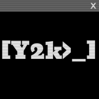

Estudante de Análise e Desenvolvimento de Sistemas - FATEC São José dos Campos
Linguagens: HTML, CSS, JavaScript
Ferramentas: Pacote Office (Word, Excel, PowerPoint)
Competências: Comunicação, Trabalho em Equipe, Resolução de Problemas
Objetivo: Registrar e gerir atestados médicos de alunos, facilitando a comunicação entre estudantes, professores e direção. Também permite a avaliação contínua de equipes ágeis.
Tecnologias: Figma, Python, Visual Studio Code
Desafio: Uso inicial das ferramentas
Solução: Aprendizado prático das ferramentas e execução do projeto
Repositório: github.com/Y2K-Systems
Resumo: Pesquisa exploratória sobre uso de IA para classificar imagens médicas (raio-X e tomografias) usando redes convolucionais.
Resultado: Acurácia de 91% com modelo ResNet50 treinado em base de dados pública
Publicação: Congresso de Computação Aplicada - 2024
Email:< isabella.zanlorenzi@fatec.sp.gov.br>